Minikube primeiros passos
Bom pessoal nosso objetivo é criar um cluster kubernetes, mas o que é kubernetes ?, em poucas palavras o kubernetes é um software open source mantido pelo google para orquestrar e gerenciar clusters de containers aqui usaremos como engine de containers o docker.
O minikube é uma excelente ferramenta para testar e aprender a trabalhar com o kubernetes
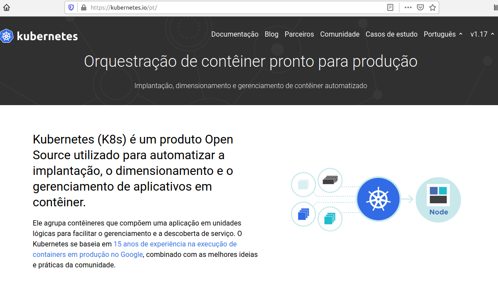
a primeira etapa para criarmos um cluster kubernetes é instalar o kubectl, mas o que é kubectl ?, kubectl é o software resposavel por “conversar” com o cluster kubernetes a partir de um computador local
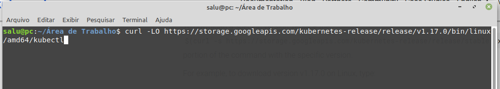
dependendo da sua internet isso pode demorar um pouco
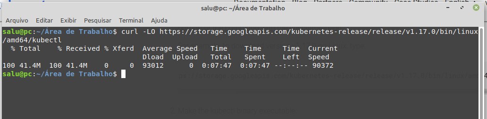
apos fazer o download vamos torna o binário executável.
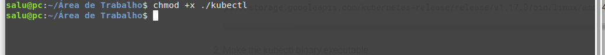
agora basta movermos para o diretório /usr/local/bin/kubectl com isso terminámos a instalação do kubectl
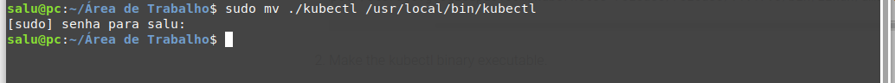
com o comando kubectl version podemos ter as informações basicas do kubectl instalado
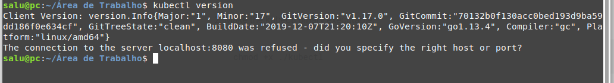
para fazer o cluster vamos usar o projeto open source minikube, o minikube vai um software de virtualização para criar um cluster kubernetes de um no único, aqui vamos usar o virtualbox para este processo, é bom lembrar que o minikube não é recomendado para ser usado em ambiente de produção, ele simula um cluster de no único com tudo o que é necessario já instalado e funcionando.
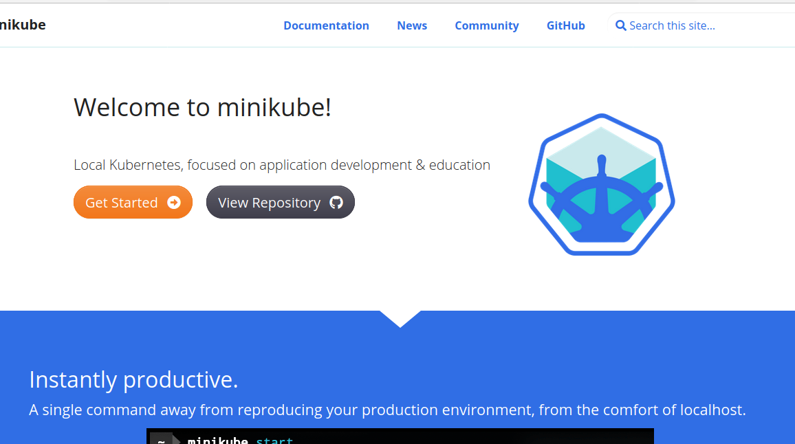
antes de prosseguir vamos conferir se a virtualização esta liberada em nossa maquina com o seguinte comando egrep -q 'vmx|svm' /proc/cpuinfo && echo yes || echo no
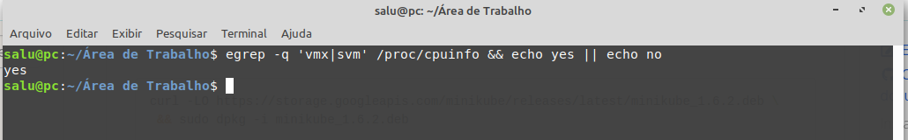
depois que vimos que a virtualização esta habilitada vamos fazer a instalação do minikube
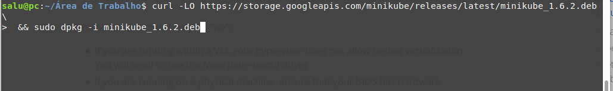
apos fazer o processo do download e feita a instalação conseguiremos ver a versão do minikube instalado com o comando minikube version
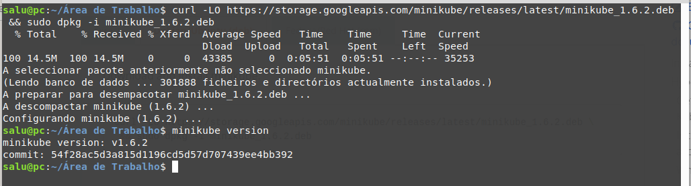
com o miniukube instalado vamos informar que iremos usar o virtualbox para virtualização
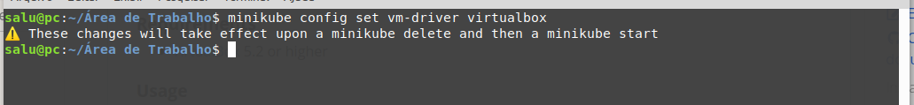
feito isso basta usar o camando minikube start para criarmos o cluster, este processo pode demorar um pouco
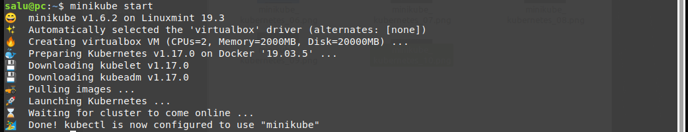
com o cluster instalado e funcionando podemos usar o comando minikube status para obter informações do cluster
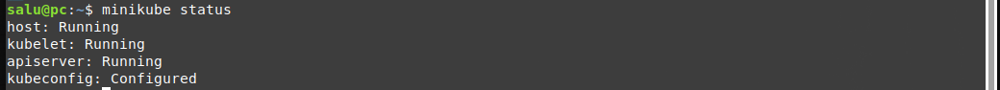
Isso é tudo, ja temos nosso cluster kubernetes local instalado e funcionando